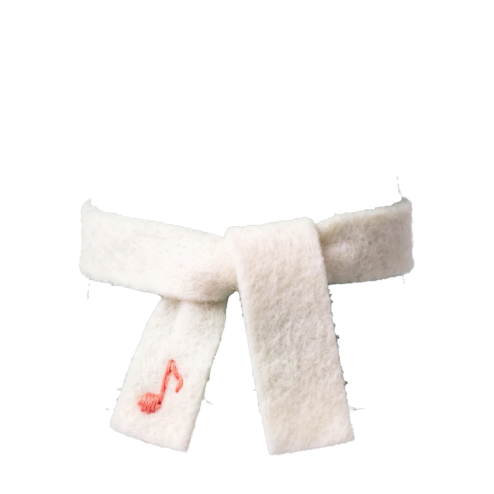

미리보기
A LITTLE PLAY, A BIG WORLD
오늘도, 나답게 놀아봐.
햇살 좋은 나의 테라스
작은 놀이가
나의 세상이 되는 곳.
몽글과 놀고, 꾸미고,
한국어로 조금 더 가까워져요.
몽글이 준비하고 있어요
3D 화면이 잠시 쉬고 있어요.
차림과 놀이 기록은 그대로예요.
몽글 · 기본 차림
PLAY & LEARN
한 판만 해볼까?
MY WARDROBE
오늘의 나를
골라봐.
작은 차림 하나로
달라지는 하루.

포근한 목도리SYNK TOWN
한국어가 생활이 되는
우리 동네.
내 집을 꾸미고, 이웃과 이야기를 나눠요.
TOPIK 1급+를 통과하면 열려요SING ALONG
입에 맴도는 한국어.
짧은 노래로 글자와 소리를 친근하게.